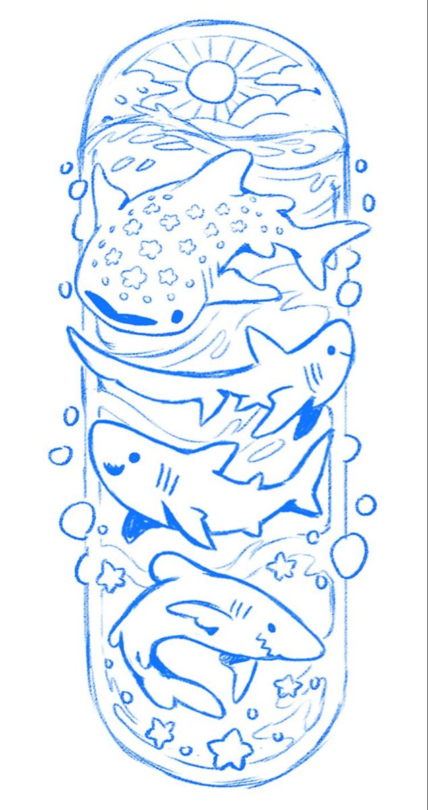
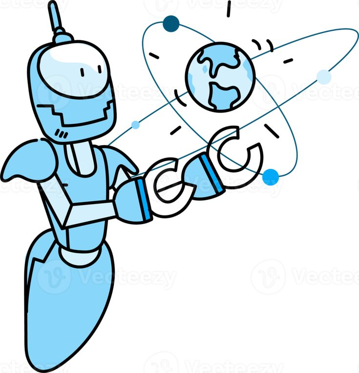

Como a tecnologia está mudando a vida dos animais marinhos
A tecnologia tem transformado de maneira significativa a vida dos animais marinhos, tanto ao melhorar a forma como são estudados e protegidos quanto ao influenciar diretamente seus habitats. Hoje, drones aéreos e aquáticos, além de etiquetas inteligentes com GPS e sensores, permitem monitorar baleias, golfinhos, tartarugas e outras espécies sem contato invasivo. Esses recursos ajudam pesquisadores a entender rotas migratórias, comportamentos e padrões reprodutivos, possibilitando ações de pre- servação mais eficazes. A tecnologia também contribui para a redução de ameaças humanas, como sistemas de alerta que avisam embarcações sobre a presença de baleias, diminuindo colisões, e barreiras acústicas capazes de afastar animais de redes de pesca. No combate à poluição, robôs subaquáticos têm sido usados para localizar e remover lixo marinho, enquanto sensores instalados no oceano monitoram toxinas, derramamentos e mudanças ambientais que afetam diretamente espécies sensíveis, como os corais. Além disso, soluções como a impressão 3D são aplicadas na construção de recifes artificiais, restaurando ecossistemas degradados, e a inteligência artificial ajuda a identificar sinais de branqueamento de corais e a detectar pesca ilegal. No entanto, o avanço tecnológico também traz impactos negativos: o aumento de ruídos submarinos provenientes de sonares, grandes embarcações e perfurações pode desorientar cetáceos; estruturas como parques eólicos offshore podem alterar rotas migratórias; e a luz artificial no ambiente marinho afeta a dinâmica natural de muitas espécies. Mesmo assim, de forma geral, as inovações tecnológicas têm se mostrado grandes aliadas na conservação da vida marinha, permitindo uma compreensão mais profunda dos oceanos e oferecendo ferramentas importantes para proteger seus habitantes.
Tecnologias de acompanhamento e preservação ambiental
As tecnologias de acompanhamento e preservação ambiental têm se tornado indispensáveis para entender e proteger os ecossistemas naturais. Sensores instalados em rios, mares, florestas e atmosferas coletam dados em tempo real sobre temperatura, umidade, qualidade da água, níveis de poluentes e outras variáveis essenciais, permitindo respostas rápidas diante de incêndios, contaminações ou mudanças climáticas. Satélites de alta resolução também desempenham um papel central ao mapear desma tamento, monitorar queimadas, acompanhar migrações de animais e observar transformações no planeta de forma contínua, ajudando a combater atividades ilegais como pesca e extração de madeira. Além disso, drones e veículos autônomos, tanto aéreos quanto subaquáticos, possibilitam o monitoramento de animais e habitats sem causar estresse à fauna, registrando áreas de difícil acesso e analisando recifes, flo restas ou regiões profundas do oceano. Tecnologias de GPS e telemetria permitem rastrear o deslocamento de espécies como tartarugas, baleias, onças e aves, oferecendo informações valiosas sobre rotas migratórias, territórios e ameaças, contribuindo para a criação de áreas de proteção mais eficazes. A inteligência artificial também se destaca nesse processo, analisando grandes volumes de dados, identificando espécies automaticamente, detectando pesca ilegal e prevendo riscos ambientais. No campo da restauração, ferramentas como impressão 3D para criar recifes artificiais, bioengenharia para recu peração de solos e drones de reflorestamento aceleram a regeneração de áreas degradadas. Por fim, plata formas digitais e aplicativos ampliam a participação popular, permitindo que cidadãos registrem ocorrên cias ambientais, ampliando o alcance das ações de conservação. Juntas, essas tecnologias tornam a preser vação ambiental mais eficiente, precisa e acessível.